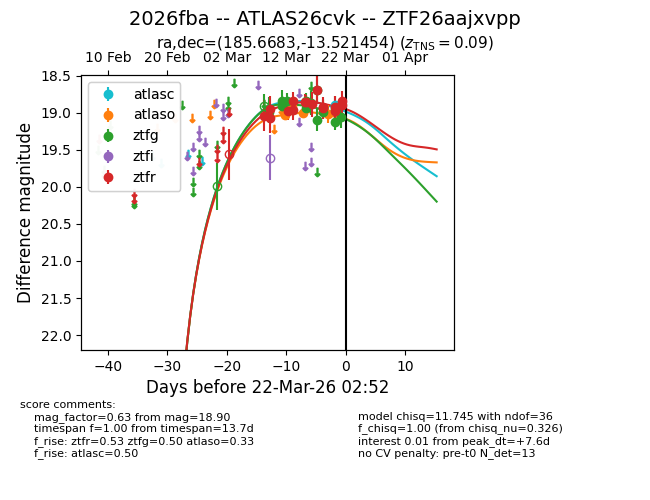
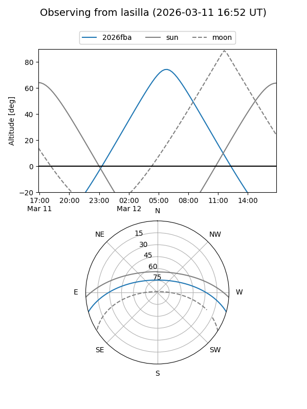
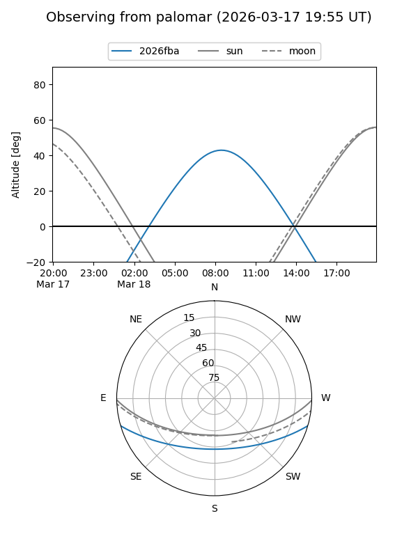
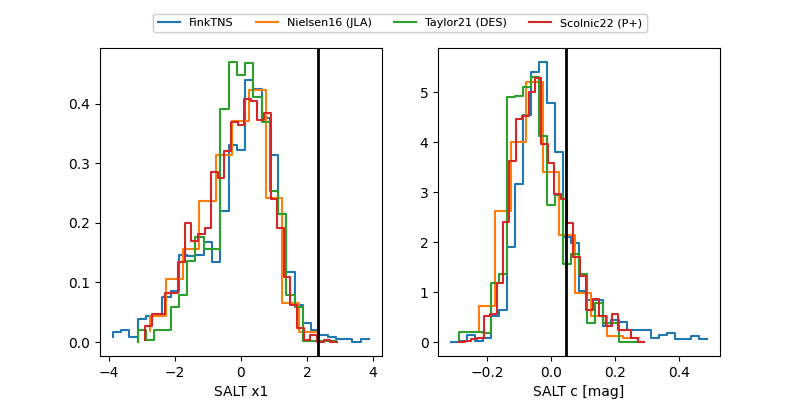

2026fba
Target 2026fba at 2026-03-22 02:54
Aliases and brokers:
FINK: link
Lasair: link
ALeRCE: link
TNS: link
YSE: link
alt names
ZTF26aajxvpp (ztf,fink_ztf)
2026fba (tns,yse)
ATLAS26cvk (atlas)
Coordinates:
equatorial (ra, dec) = 185.6683,-13.52145
equatorial (HMS+DMS) = 12:22:40.39,-13:31:17.23
galactic (l, b) = (292.2934,+48.75521)
Flags:
confirmed ia
Photometry:
last atlasc=18.89, atlaso=19.02, ztfg=19.06, ztfr=18.90
1 atlasc, 4 atlaso, 15 ztfg, 16 ztfr detections
Lightcurve

Visibility


Additional plots
